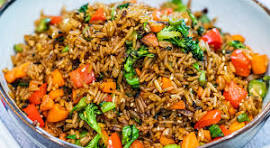

Fried Rice

Description
Fried rice is a colorful and flavorful dish
made by stir-frying cooked rice with vegetables, seasonings,
and protein. Known for its light smoky aroma and vibrant
appearance, it is commonly served at parties and special
occasions. Fried rice offers a balanced combination of
carbohydrates, vegetables, and protein in a single dish.
Ingidients
- Long-grain parboiled rice
- Mixed vegetables (carrots, green peas, sweet corn, green beans)
- Onions
- Green bell peppers
- Vegetable oil or margarine
- Chicken or beef stock
- Curry powder
- Thyme
- Salt
- Seasoning cubes or powder
- Cooked chicken, beef, shrimp, or liver (optional)
Steps
- Parboil and cook the rice with stock until partially done.
- Stir-fry onions and vegetables in oil.
- Add seasoning and spices to the vegetables.
- Add the rice and mix thoroughly.
- Stir-fry until the rice is evenly coated and fully cooked.
- Add protein if desired and mix well.Add protein if desired and mix well.
- Serve hot.
Home